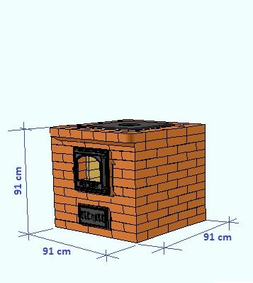
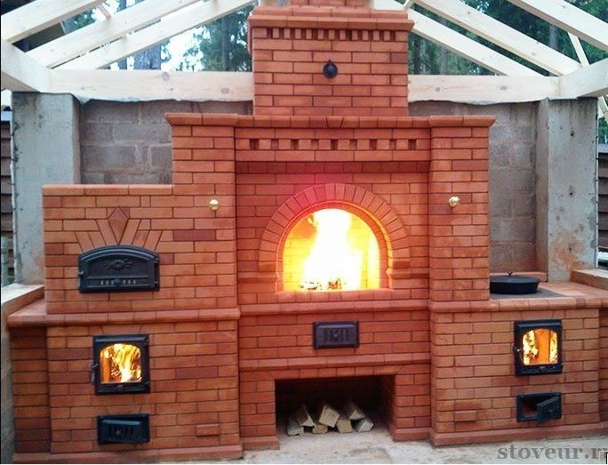

Duonkepės
 +370 673 19938 info@mixtechnika.lt Kontaktai Mano paskyra 0 €0.00 Jūsų pirkinių krepšelis yra tuščias! Navigacija Video ir audio aparatūra Bevielės kolonėlės DJ Kontroleriai DJ Priedai Namų kino sistemos Stiprintuvai Televizoriai Muzikos centrai Žemų dažnių kolonėlės Blu-ray, DVD, CD, FM, Tinklo grotuvai Kolonėlės Televizorių priedai Belaidžiai garsiakalbiai Plokštelių grotuvai (patefonai) Ausinės Automobilinė garso aparatūra Smulki buitinė technika Akcijos Daugiafunkciniai puodai - Cikloninės krosnelės Duonkepės Garų puodai Gruzdintuvės (Fritiūrinės) Kavamalės Kepsninės (Griliai) Kokteilinės Lygintuvai, lyginimo sistemos Mikseriai Mėsmalės Peilių galąstuvai Pieno putų plaktuvas Pjaustyklės Priedai Skrudintuvai Smulkintuvai Sulčiaspaudės Sumuštinių keptuvai Svarstyklės Trintuvai (blenderiai) Vaflinės Vaisių, daržovių džiovyklės Vakuumatoriai Virduliai Virtuviniai kombainai Virtuvinės svarstyklės Plaukų priežiūra Plaukų formavimo šukos Priedai Plaukų džiovintuvai Plaukų tiesinimo žnyplės Plaukų garbanojimo žnyplės Plaukų kirpimo mašinėlės Barzdaskutės Epiliatoriai Barzdakirpės Kūno plaukų priežiūros rinkiniai Nosies, ausų ir antakių plaukų kirpimo mašinėlės Plaukų kirpimo mašinėlės gyvūnams Virtuvės Reikmenys Keptuvės Peiliai Prieskonių malūnėliai Puodai Buitinė technika Mini krosnelės - orkaitės Priedai Gartraukiai Kavos aparatai Kaitlentės Orkaitės Viryklės Indaplovės Skalbimo mašinos Džiovyklės Šaldytuvai Šaldikliai Mikrobangų krosnelės Mikroklimato prietaisai Kita Garažo - Automobilių prekės Garažo baldai Langų grandikliai Laisvalaikis Elektriniai paspirtukai Žaidimų konsolės Valymo - plovimo įrengimai Aukšto slėgio plovimo įrenginiai Garo valytuvai Grindų poliravimo įrenginiai Laistymo įranga Langų valytuvai Priedai Rankinės šlavimo mašinos Vandens siurbliai Dulkių siurbliai Santechnika Plautuvės Maišytuvai (Kranai) Dozatoriai Maisto atliekų smulkintuvai Priedai Sodas - Daržas Baldai Elektriniai įrankiai Elektrinių įrankių priedai Grandininiai pjūklai Gyvatvorės žirklės - Krūmapjovės Kepsninių ir rūkyklų priedai Kepsninės Kibirai - kubiliukai Lapų pustuvai - siurbliai Laužavietės Medinės statinės Rūkyklos Trimeriai Vejapjovės Šakų genėtuvai Žolės rovėtuvai - Terasų, trinkelių priežiūra Mano paskyra 0 Filtras Gamintojai MAESTRO MORPHY RICHARDS GASTROBACK PANASONIC KENWOOD ADLER BEPER UNOLD
Duonkepės
Pagrindinis Smulki buitinė technika Duonkepės Filtruoti: Nesurikiuota Naujausios viršuje Pigiausios viršuje Brangiausios viršuje A-Ž pagal abėcėlę Ž-A pagal abėcėlę Geriausiai įvertintos Rodyti: 36 72 108 144 180 MAESTRO MR-750 Non-slip feet: Y Delayed start timer: Y Jam making function: Y Bread & dough making program.. €57.45 ADLER AD-6019 Bread maker Adler AD 6019 gives you the opportunity to make your own, fresh bread instead of buying .. €68.95 MAESTRO MR-751 Product colour: White Power: 870 W Control type: Buttons Bread & dough making programs: Cak.. €74.60 BEPER BC.130 Automatinis duonos virimo aparatas su nuimamu ir plaunamu nelipnius indu. Su dangčiu esančiu langu p.. €87.00 MORPHY RICHARDS Grey, White 600 W Product colour: White, Grey Housing material: Plastic Built-in display: Y Display type: LCD Co.. €108.95 UNOLD 68456 Stainless stee Embeeded battery: No WEEE tax: Yes WEE classification: CL109:5:2017-04-01 .. €120.50 GASTROBACK Breadmaker Stainless steel, 500 W Gross weight: 6.20 kg Net weight: 5.20 kg Packing quantity: 1.00 pc(s) .. €140.00 MORPHY RICHARDS DUONKEPĖ Product colour: Silver Built-in display: Y Display type: LCD Control type: Touch Delayed start.. €151.00 Naujiena Duonkep Built-in display: YViewing window: YBread & dough making programs: Gluten free breadJam making f.. €167.00 KENWOOD BM450KENWOOD BM450 Duonkepė
€185.00 PANASONIC SD-ZB2512KXE Temperatūros jutiklis Mielių skirstytuvas Razinų ir riešutų skirstymo priedas 17 duo.. €219.00 Rodoma nuo 1 iki 11 iš 11 (1 puslapių) Informacija Mūsų partneriai Prekių pristatymo sąlygos Prekių grąžinimo sąlygos Garantinis aptarnavimas Apmokėjimo sąlygos Klientų aptarnavimas Visos prekės Prekės su nuolaida Gamintojai Svetainės medis Kontaktai Klientams Klientams Užsakymų istorija Naujienlaiškis Kontaktai +37067319938 info@mixtechnika.lt 2020 © Visos teisės saugomos. Kopijuoti, platinti svetainės turinį be autorių sutikimo draudžiama. Elektroninių parduotuvių nuoma - eShoprent.com Rašyk Skambink